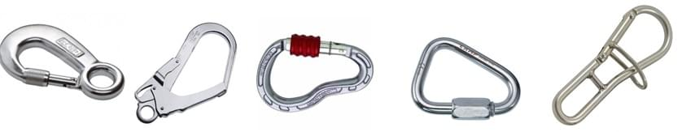
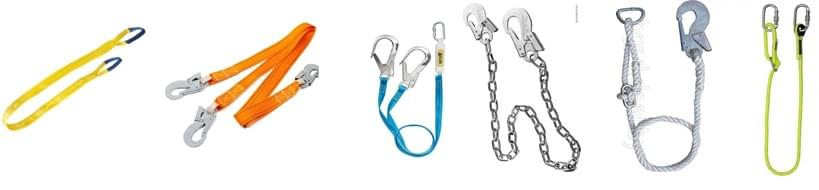
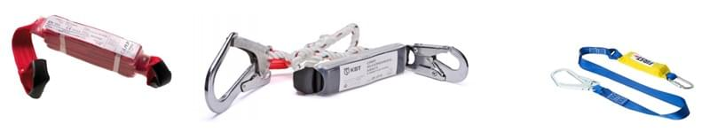
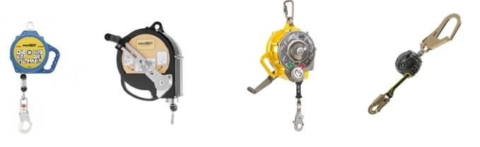
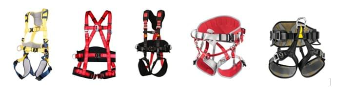
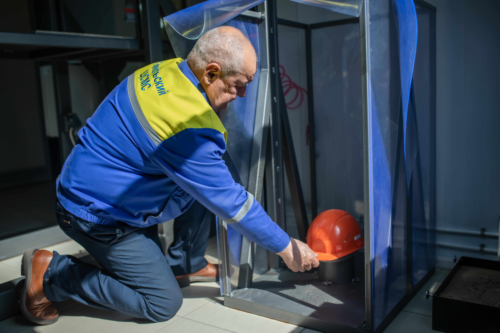

Испытательный центр оказывает услуги по испытаниям средств защиты от падения с высоты (СИЗ) на соответствие требований технического регламента таможенного союза ТР ТС 019/2011 «О безопасности средств индивидуальной защиты». Для проведения испытаний используется уникальное оборудование, которое позволяет имитировать и измерять реальные нагрузки, воздействующие на человека при падении с высоты, выявлять несоответствие средств защиты требованиям безопасности. Данные испытания позволяют подтвердить качество средств защиты от падения с высоты и уберечь работников от несчастных случаев при производстве работ на высоте.
Государственное предприятие Гомельский ЦСМС оказывает услуги по испытаниям и сертификации следующих средств индивидуальной защиты от падения с высоты:
-
Карабины:

-
Стропы:

-
Амортизаторы:

-
Устройства втягивающего типа:

-
Страховочные привязи и привязи для положения сидя:

Испытательный центр оказывает услуги по сертификационным испытаниям средств индивидуальной зашиты головы – каски и каскетки защитные на соответствие требований технического регламента таможенного союза ТР ТС 019/2011 «О безопасности средств индивидуальной защиты».
